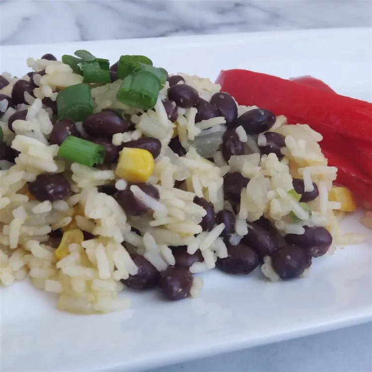

Black Beans and Rice

Description
Black beans and rice make a great 30-minute vegetarian meal that's filling, delicious, and cheap!
Great as a side dish or in a burrito bowl, too.
Ingredients
- Olive oil
- Onion
- Garlic
- White rice
- Vegetable broth
- Black beans
- Ground cumin
- Cayenne pepper
Steps
- Heat oil in a saucepan over medium-high heat. Add onion and garlic; cook and stir until onion has softened, about 4 minutes. Stir in rice to coat; cook and stir for 2 minutes.
- Add vegetable broth and bring to a boil. Cover, reduce to a simmer, and cook until liquid is absorbed, about 20 minutes.
- Stir in beans, cumin, and cayenne; cook until beans are warmed through.